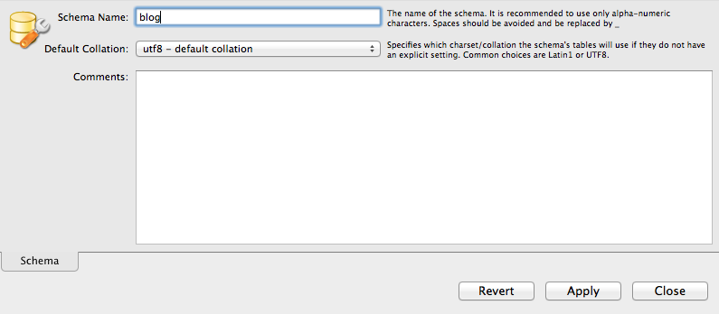
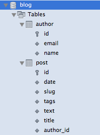

MySQL
MySQL
Introduction
Les bases de données relationnelles sont les plus répandues en production.
Elles ont survécues aux bases de données objets et aux bases xml.
Parmis celle-ci Mysql a toujours eut une place a part : la base libre, simple et performante.
Installation
L'installation de myqsl est simple, il suffit de suivre les instructions disponibles sur www.mysql.fr/
Une fois installée, il suffit de démarrer mysql
création de la base
Afin de pouvoir gérer la base de données mysql, on récupère MySQL Workbench sur le site de mysql.
Une fois le workbench lancé, on crée une nouvelle connexion sur localhost

On se connecte sur le serveur en local et on demande la création d'un nouveau schéma.
Le schéma blog existe et il ne contient aucune table.
Changements dans l'application
La première chose à faire est de rajouter le driver mysql.
<dependency>
<groupId>mysql</groupId>
<artifactId>mysql-connector-java</artifactId>
<version>5.1.18</version>
<scope>compile</scope>
</dependency>
Dans notre application, la définition de la connexion à la base est :
<!-- pool de connexion -->
<bean id="dataSource" class="org.apache.commons.dbcp.BasicDataSource" destroy-method="close">
<property name="driverClassName" value="org.apache.derby.jdbc.EmbeddedDriver"/>
<property name="url" value="jdbc:derby:target/blogdb;create=true"/>
<property name="username" value=""/>
<property name="password" value=""/>
</bean>
<bean id="sessionFactory" class="org.springframework.orm.hibernate3.annotation.AnnotationSessionFactoryBean">
<property name="dataSource" ref="dataSource"/>
<property name="hibernateProperties">
<bean class="org.springframework.beans.factory.config.PropertiesFactoryBean">
<property name="properties">
<props>
<prop key="hibernate.dialect">org.hibernate.dialect.DerbyDialect</prop>
<prop key="hibernate.hbm2ddl.auto">update</prop>
</props>
</property>
</bean>
</property>
<property name="packagesToScan" value="edu.ecm.blog.domain"/>
</bean>
Pour mysql, l'url est de la forme :
jdbc:mysql://localhost/dbname
Avec la configuration de mysql par défaut, on a donc la configuration suivante.
<!-- pool de connexion --> <bean id="dataSource" class="org.apache.commons.dbcp.BasicDataSource" destroy-method="close"> <property name="driverClassName" value="org.apache.derby.jdbc.EmbeddedDriver"/> <property name="url" value="jdbc:mysql://localhost/blog"/> <property name="username" value="root"/> <property name="password" value=""/> </bean>
Il faut également changer le dialect hibernate en :
org.hibernate.dialect.MySQL5Dialect
Si on redémarre, notre application est connectée à la base mysql.
Sous le workbench, on peut voir nos tables
Afin de se connecter à d'autres bases, il suffit d'avoir le driver et la bonne url.
Hibernate et jdbc permettent de s'abstraire de beaucoup des différences existantes entre les bases.
Mise à jour du schéma
Actuellement, le schéma de la base de données est mis à jour au démarrage de l'application.
<bean id="sessionFactory" class="org.springframework.orm.hibernate3.annotation.AnnotationSessionFactoryBean">
<property name="dataSource" ref="dataSource"/>
<property name="hibernateProperties">
<bean class="org.springframework.beans.factory.config.PropertiesFactoryBean">
<property name="properties">
<props>
<prop key="hibernate.dialect">org.hibernate.dialect.MySQL5Dialect</prop>
<prop key="hibernate.hbm2ddl.auto">update</prop>
</props>
</property>
</bean>
</property>
<property name="packagesToScan" value="edu.ecm.blog.domain"/>
</bean>
Lorsque l'on ajoute des attributs au model, les colonnes sont automatiquement crées.
De même, lors de la suppression, la base perd des colonnes.
En production, cela peut être embêtant si l'on souhaite migrer progressivement les applications et donc garder la main sur les modifications de schéma effectuées dans la base.
De plus, une erreur de déploiement pourrait détruire des données importantes.
Pour ne pas faire d'erreur, on passe donc le hbm2ddl (Hibernate model to data definition language) en none
Oui mais comment demander a hibernate de nous aider quand même un peu ?
En fait, on va utiliser le code d'hibernate pour générer le sql.
Configuration configuration = new Configuration();
configuration.addAnnotatedClass(Post.class);
configuration.addAnnotatedClass(Author.class);
for (String string : configuration.generateSchemaCreationScript(new MySQL5Dialect())) {
System.out.println(string + ";");
}
Il est facile de placer ce code dans un main ou un test unitaire afin de générer le code sql de la base désirée.
On obtient le code ddl suivant que l'on peut exécuter via le workbench.
create table author (id bigint not null auto_increment, email varchar(255), name varchar(255), primary key (id));
create table post (id bigint not null auto_increment, date datetime, slug varchar(255), tags varchar(255),
text varchar(4000), title varchar(255) not null, author_id bigint, primary key (id));
alter table post add index FK3498A070AF1F0F (author_id), add constraint FK3498A070AF1F0F foreign key (author_id)
references author (id);